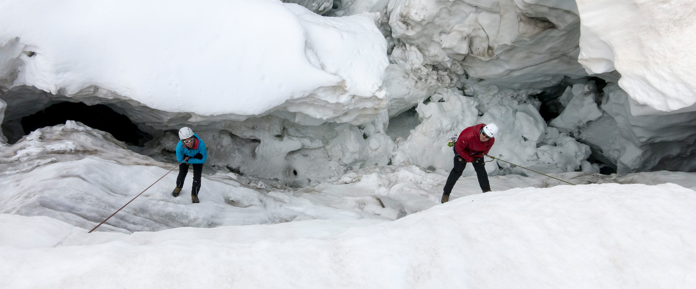

TAG 1 | Zustieg - Materialtransport - Einführung und Übung
Treffpunkt ist am Morgen der Parkplatz hinter der Kirche in Krimml. Materialverladung und Transfer mit dem Hüttentaxi.
Zustieg ab Materialseilbahn bzw. Innere Keesalm Richtung Warnsdorfer Hütte (500 Hm ca. 1,5-2 h). Lager- bzw. Zimmerbezug, kurze Rast sowie Programmbesprechung der Tage.
Im nahegelegenen Klettergarten werden die ersten Seiltechnikübungen durchgemacht (Abseilen, Knotenkunde, Anseilmethoden, Gletscherseilschaft, Fixpunkte im Fels).



Abends Orientierung, Gletscher- und Wetterkunde.